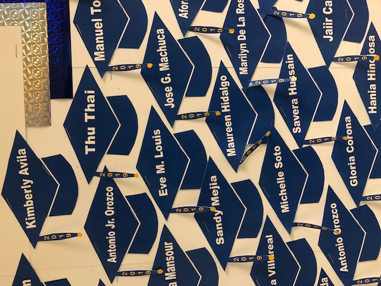
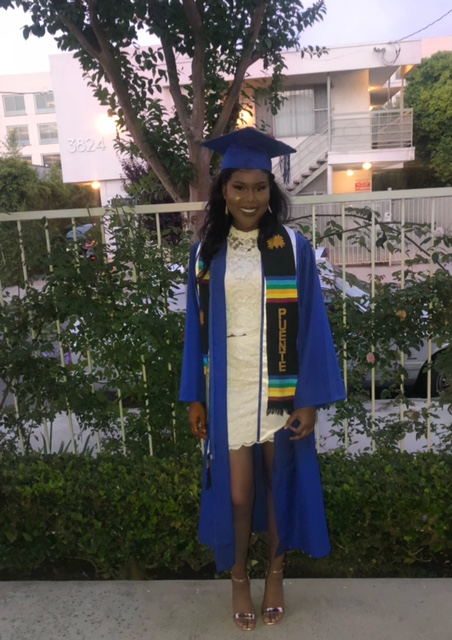
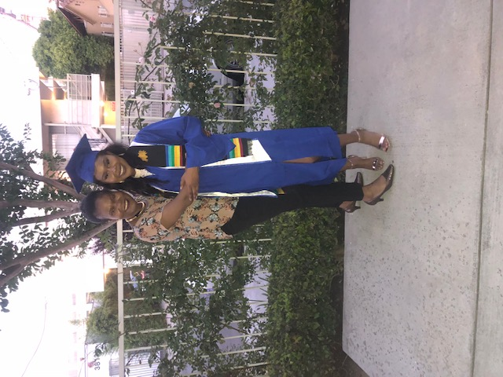
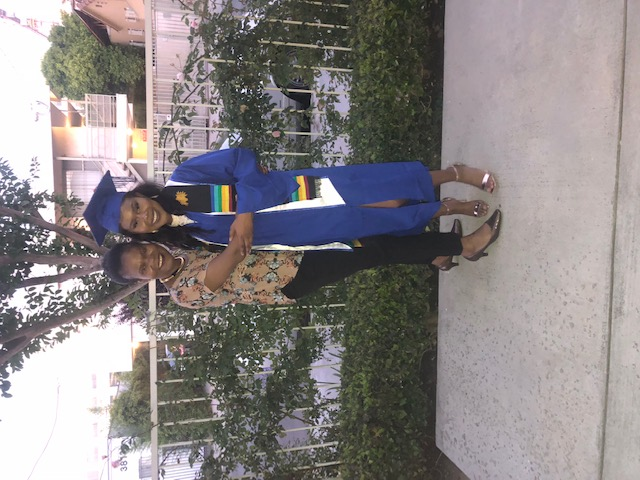

Eve Louis
During community college, I fell in love with psychology. My curiosity led me to this major because I'm always questioning why people make certain decisions. What better way to make money and have a great career. My mother always used to tell me to stay in school because life will be easier when I’m educated and have a degree.
I love learning and that is one of the reasons why I love psychology so much. In high school, It took some time to adjust but every year just got better for me. I took advantage of tutoring. I would also stay after class to ask the teachers for help. I was a 3.0 student in high school, but when I started community college, things were harder because I got a job to help my mother out. I still email my teachers and went to a couple of study sessions. It’s just harder to attend everything now because I have to go to work most of the time.
Over the past two years I have volunteered to feed the homeless with my church because helping others just warms up my heart. I have made sandwiches in my free time to give to the homeless. I’ve been working with Starbucks for two years now, which has taught me great communication skills and teamwork.
Experience
American Cancer Association Relay for life
• Organized various fundraisers like penny wars, movie night, etc.
• Raised a total of $1,300
Education
UC Riverside
University of California Riverside
Portfolio




